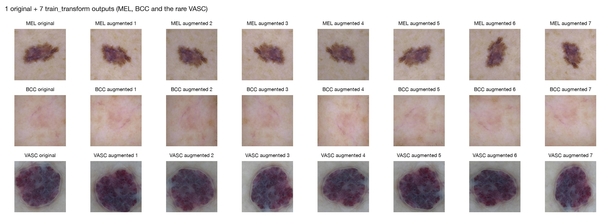
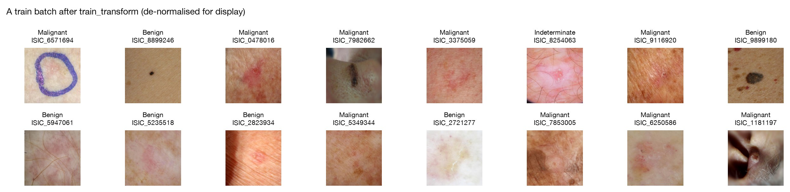

Summary. All 10,480 images exist and verify; the target diagnosis_1 keeps three classes; the data are
split 70/15/15 by lesion with zero overlap and ≤ 0.6 pp class drift; train is imbalanced 27.6 : 1 and
both a class-weighted loss and a weighted sampler are ready; images enter the model at 224×224 with train-only
normalisation and label-safe augmentation.
Primary target: diagnosis_1 with three classes. Malignant 3,634 lesions (69.4%), Benign 1,483
(28.3%), Indeterminate 123 (2.3%). All Indeterminate lesions are actinic keratoses (AKIEC, which also holds 180
malignant SCC in situ). Dropping them would leave the model unable to handle a lesion type it will meet in
practice; merging them into Malignant is defensible (both lead to treatment) but hides the only pre-cancerous
group, which is managed differently (cryotherapy or topical therapy rather than excision). I keep the class and handle
its rarity with weights or sampling. Confusing Indeterminate with Malignant is clinically cheap (both trigger action),
so a secondary binary view, "needs action" (Malignant or Indeterminate) vs. Benign, is stored for clinical reporting.
11-class stretch goal: DF (52), INF (50) and VASC (47) are kept and up-weighted, since each has a distinct
appearance. MAL_OTH (9 lesions: 6 train, 3 val, 0 test) can be neither learned nor evaluated, and its balanced weight
(≈ 53) would destabilise training. It is merged with BEN_OTH (44) into OTHER (53 lesions, read as "unusual
lesion → refer"), giving 10 classes. The trade-off: OTHER mixes benign and malignant, so it must never be read as
"benign". The mapping is saved in artifacts/label_map.json.
| Split | Lesions | Share | Images | Malignant | Benign | Indeterminate | Rare 11-class lesions (DF / INF / VASC / BEN_OTH / MAL_OTH) |
|---|---|---|---|---|---|---|---|
| train | 3,667 | 70.0% | 7,334 | 69.2% | 28.3% | 2.5% | 36 / 35 / 33 / 31 / 6 |
| val | 787 | 15.0% | 1,574 | 69.8% | 28.5% | 1.8% | 8 / 7 / 8 / 7 / 3 |
| test | 786 | 15.0% | 1,572 | 69.6% | 28.2% | 2.2% | 8 / 8 / 6 / 6 / 0 |
split_lesions() runs StratifiedGroupKFold at lesion level (groups = lesion_id, stratified on
the 11 classes): it cuts 20 stratified folds of 5% each, then 3 folds become test and 3 become val (seed 42, created
2026-10-04). Images are assigned afterwards by lesion. Verified in code: zero lesion_id overlap between every
pair of splits; every lesion has exactly 2 images in its split, one dermoscopic and one clinical; the largest
deviation from the global class proportions is 0.21 pp over the 11 classes and 0.57 pp for
diagnosis_1 (Indeterminate). A property test over 10 seeds (no overlap, sizes within ±1 pp,
reproducible) passes. The files are splits/train.csv, val.csv and test.csv, one row per
image.
Train holds 5,076 Malignant, 2,074 Benign and 184 Indeterminate images: an imbalance ratio of 27.6 : 1 (Malignant to Benign: 2.4 : 1). Two corrections are implemented, to be used one at a time (together they would correct twice):
artifacts/class_weights.json).Evaluation uses balanced accuracy, macro-F1 and per-class recall per lesion, never plain accuracy (always answering "Malignant" already scores 69%).
Image.verify() finds 0 unreadable files;
all images are 600×450 RGB (outputs/milestone1/image_size_summary.csv). The Session 2 loader and the new
MilkDataset now fail loudly on a missing file (FileNotFoundError) unless
allow_missing=True is passed explicitly.anatom_site_general is 37.3% missing, but 3,850 of the 3,912 "missing" images are
trunk lesions in supplements/training_input.csv: the column simply has no trunk category. Site is
recovered as "trunk", with "unknown" for the other 62 images. Age (0.4% missing) is imputed with the train median if
used. anatom_site_special (98% missing) is dropped. Missing values in diagnosis_3/4 and
melanocytic mean "not applicable".diagnosis_2/3/4, melanocytic (True exactly for NV and MEL),
diagnosis_confirm_type and concomitant_biopsy (identical columns; 87% of lesions that were not
biopsied are benign) leak the label and are never inputs. image_type is label-free (one image of each type per
lesion). image_manipulation="altered" is 12.8% Indeterminate vs. 2.0%, so it is not an input and is monitored as
a possible shortcut. File size carries no label signal (ROC-AUC 0.48–0.51).Resolution 224×224: 100% of the images are larger (600×450), so 224 is a 2× downscale with no
upsampling, and it is the native input of ImageNet-pretrained CNNs. Evaluation resizes the shorter side to 224 and
crops the centre (no shape distortion). Normalisation uses statistics from the 7,334 train images only:
mean [0.685, 0.527, 0.477], std [0.122, 0.131, 0.152] (artifacts/norm_stats.json).
eval_transform is deterministic (asserted on two passes over the same image).
Two images per lesion: I chose (a): each image is a training sample with its lesion's label (twice the
data, both views learned), and at evaluation the two views' probabilities are averaged per lesion
(aggregate_predictions). The alternatives: (b) one image type only (dermoscopic is the most
standardised, but this halves the data and drops the clinical context); (c) both views as one sample in a
two-branch model (LesionDataset, already written): the best use of the information, but it needs both
images at inference and a larger model, so it is kept for a later milestone. Leakage risk if evaluated per
image: each lesion would count twice, giving over-confident metrics and two different answers for one patient.
Had the split been made per image, 80% of test images would have their twin in train (Part A, A3.1).
| Augmentation (train only) | Parameters | Why the label does not change |
|---|---|---|
| RandomResizedCrop | 224, scale 0.75–1.0 | keeps ≥ 75% of the image: the (centred) lesion stays in view; mimics distance or zoom |
| Horizontal + vertical flip | p = 0.5 each | a lesion on the skin has no left/right or canonical "up" |
| RandomRotate90 | 0/90/180/270° | the dermoscope can be held at any angle; no interpolation, no black corners |
| ColorJitter | brightness 0.1, contrast 0.1, saturation 0.05, hue 0 | within normal lighting variation; Part A (A3.5) showed any hue jitter (≥ 7°) exceeds the 5° Benign/Malignant hue gap |

train_transform for MEL, BCC and the rare VASC: the lesion and its colours are preserved.
show_grid; titles are the labels and image ids.Residual leakage: MILK10k has no patient identifier, so different lesions of the same patient (same skin,
camera and day) can land in different splits; near-duplicate photos across lesions have not been searched for yet
(e.g. with perceptual hashes); some images show surgical pen marks around the lesion (Figure 2, first image), a known shortcut in dermatology AI that has not been audited yet; and the test split must be used once, after all tuning on validation.
Biases: the data are biopsy-enriched (69% malignant; benign lesions are the suspicious ones), so predicted
probabilities will be too high in a normal clinic and need recalibration. All images come from one study team, so
devices, clinics and populations are narrow, and skin-tone coverage (skin_tone_class in the supplements) has
not yet been checked. Rare classes (Indeterminate 123, INF 50, VASC 47 lesions) give noisy per-class estimates.
What a clinician should know: this model judges lesions that were already referred for biopsy; it has not
been validated on unselected lesions, other devices or darker skin types; it is a second opinion that may prioritise
a biopsy, never a reason to skip one.